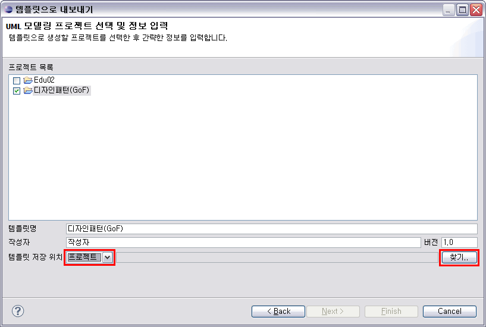

1. UML 모델 템플릿 내보내기
작성한 UML 모델이 있는 프로젝트를 재사용하기 위해 템플릿으로 내보내는 기능입니다. 여기서 내보낸 모델
템플릿은 다른 프로젝트에서 [가져오기] 하여 사용할 수 있습니다. 내보낸 모델 템플릿은 다른 프로젝트 내 혹은 디렉토리에 umt 파일 형식으로
저장됩니다.
프로젝트 탐색기에서 프로젝트를 선택한 후, 마우스 오른쪽 클릭하여 [Export]를 선택합니다.

<그림 1. 프로젝트 탐색기에서 Export 선택>
[Export] 마법사에서 [NEXCORE UML 모델링 도구 > UML 모델 템플릿]을 선택한 후, [Next] 버튼을 클릭합니다.

<그림 2. UML 모델 템플릿 선택>
[프로젝트 목록]에서 내보낼 프로젝트를 체크합니다. 그리고 화면 하단에서 [템플릿명], [작성자], [버전]을 입력합니다. 이 정보는 템플릿을 가져올 때 식별할 수 있는 정보가 됩니다. [템플릿 저장 위치]는 프로젝트나 디렉토리 중에서 선택할 수 있습니다.

<그림 3. 내보낼 프로젝트 선택 및 템플릿 정보 입력>
여기서는 [템플릿 저장 위치]를 [프로젝트]로 선택합니다. 그리고 오른쪽에 위치한 [찾기..] 버튼을 클릭합니다.

<그림 4. 템플릿 저장 위치 설정>
템플릿 파일을 저장할 위치를 선택합니다. 다이얼로그에 나타나는 트리에서 프로젝트나 프로젝트 하위의 폴더를 선택하고, 파일명을 입력한 후, [Finish] 버튼을 클릭합니다.

<그림 5. 템플릿 저장 위치 지정>
지정한 저장 위치와 템플릿명이 [템플릿 저장 위치] 항목에 표시됩니다. [Finish] 버튼을 클릭합니다.

<그림 6. 템플릿 저장 정보 입력 완료>
내보내기가 완료되면 [정상적으로 저장되었습니다.]라는 메시지 다이얼로그가 보이고, 프로젝트 탐색기에서 해당 위치에 저장된 템플릿 파일이 생성된 것을 확인할 수 있습니다.

<그림 7. 템플릿으로 내보내기 완료>

<그림 8. 내보낸 템플릿 파일 확인>
2. UML 모델 템플릿 가져오기
NEXCORE UML Modeler에서 생성한 UML 모델 템플릿 파일(*.umt)을 이용하여 모델
내용을 가져오는 기능입니다. 작업 공간 내의 프로젝트나 파일 시스템에 있는 디렉토리, ZIP, JAR에서 템플릿을 불러올 수 있습니다.
프로젝트 탐색기에서 프로젝트를 선택하고, 마우스 오른쪽 클릭하여 [Import]를 선택합니다.

<그림 9. 프로젝트 탐색기에서 Import 선택>
[NEXCORE UML 모델링 도구 > UML 모델 템플릿]을 선택하고, [Next] 버튼을 클릭합니다.

<그림 10. UML 모델 템플릿 가져오기 선택>
[템플릿 저장소] 항목에 있는 콤보박스를 클릭하여 템플릿 저장소를 선택합니다. 기본 템플릿 2가지가 내장되어 있으며, 오른쪽에 있는 [관리..] 버튼을 클릭하여 저장소를 추가/삭제할 수 있습니다.

<그림 11. 템플릿 저장소 선택>
[템플릿 저장소]를 [Design Pattern(GoF) - 기본 템플릿]로 선택합니다. 해당 템플릿 저장소에 있는 umt 형식의 파일이 하단의 리스트에 표시됩니다. [Design Pattern (GoF).umt] 항목을 체크하여 선택하고 [Next] 버튼을 클릭합니다.

<그림 12. 템플릿 선택>
모델 템플릿에서 가져온 내용을 저장할 위치를 왼쪽에 나타나는 트리에서 선택합니다. 폴더를 선택하면 하위에 모델 파일을 새로 생성하여 템플릿을 가져올 수 있고, 모델을 선택하면 해당 모델 하위에 템플릿 내용을 가져올 수 있습니다. 여기서는 [모델] 폴더를 선택합니다.

<그림 13. 템플릿 적용 위치 선택>
모델 템플릿에 포함된 다이어그램 중에서, 가져올 다이어그램들을 오른쪽에 있는 다이어그램 리스트에서 선택할 수 있습니다. 모델 템플릿에 포함된 다이어그램을 모두 다 가져오고 싶을 때는 [모든 다이어그램 선택] 항목에 체크하면 됩니다. 여기서는 [모든 다이어그램 선택]의 체크를 해제하고, [Command Class Diagram] 만을 선택하여 가져오도록 하겠습니다.

<그림 14. 가져올 다이어그램 선택>
다이얼로그의 왼쪽 트리에서 폴더를 선택했으므로, 새 모델을 생성하여 그 모델 안에 모델 템플릿의 내용을 채우게 됩니다. 따라서 새 모델 파일명을 입력해야 합니다. [템플릿으로 새로 생성할 모델 파일명]에 생성할 모델의 파일명을 입력하고 [Finish] 버튼을 클릭합니다.

<그림 15. 모델 파일명 입력>
다이얼로그 하단에 현재 진행 상황이 표시되고, 가져오기가 완료되면 [템플릿에서 가져오기가 완료되었습니다.]라는 메시지 다이얼로그가 표시됩니다.

<그림 16. 템플릿에서 가져오기 완료>
프로젝트 탐색기에서 가져온 모델 템플릿으로 생성된 모델을 확인할 수 있습니다.

<그림 17. 가져온 템플릿 확인>